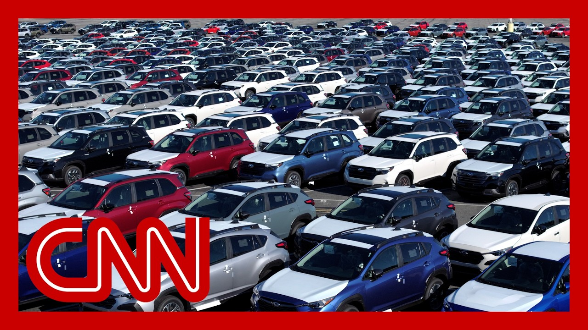

【CEO警告特朗普关税"极端"，大型汽车公司宣布涨价】
Summary: A dire warning from JP Morgan's CEO Jamie Dimon highlights the extreme nature of Trump's tariffs, predicting inflation, stagflation, and economic fallout, while companies like Subaru and Home Depot adjust prices and product lines due to rising costs.
摘要： 摩根大通CEO杰米·戴蒙发出严厉警告，指出特朗普关税的极端性，预测将引发通胀、滞胀和经济连锁反应，斯巴鲁和家得宝等公司因成本上升正调整价格和产品线。

⏱️ Estimated Reading Time: 15 min
A dire new warning from the CEO of America's largest bank, who is sounding the alarm on tariffs and their impact on the U.S. economy.
美国最大银行的CEO发出严厉新警告，对关税及其对美国经济的影响敲响警钟。
We're talking about JP Morgan's Jamie Dimon saying that Trump's tariffs are extreme and that he believes the full impact are still yet to be felt.
摩根大通的杰米·戴蒙表示特朗普的关税政策过于极端，他认为全面影响尚未显现。
People feel pretty good because you haven't seen an effect of tariffs.
人们感觉良好是因为尚未看到关税的影响。
The market came down 10% is back on 10%.
市场下跌10%后又回升了10%。
I think that's an extraordinary amount of complacency.
我认为这种自满情绪异常严重。
I don't think we could predict the outcome.
我认为我们无法预测结果。
And I think the chance of inflation going up and stagflation will be higher than other people think.
我认为通胀上升和滞胀发生的概率比人们想象的更高。
We're also seeing new fallout from President Trump's global trade war today.
今天我们正目睹特朗普总统全球贸易战的新后果。
Subaru following Walmart's lead, announcing that it will hike prices to offset increased costs.
斯巴鲁效仿沃尔玛，宣布将提高价格以抵消成本上涨。
In the meantime, Home Depot says it plans to keep most of its prices stable, but it says the tariffs may increase prices on select items and force the company to eliminate some product lines entirely.
与此同时，家得宝表示计划保持大部分价格稳定，但关税可能提高部分商品价格，并迫使公司完全取消某些产品线。
With us now is Scott Lincicome, the vice president of general economics at the Cato Institute.
现在与我们连线的是卡托研究所通用经济学副总裁斯科特·林西科姆。
All right, Scott, so what do you first make of Jamie Dimon's warning here?
好的斯科特，你对杰米·戴蒙的警告首先有何看法？
Have projections about the effects of inflation and stagflation been too conservative?
关于通胀和滞胀影响的预测是否过于保守？
Yeah, I think they have.
是的，我认为确实如此。
even granting that, you know, United States economy is huge and that trade is a relatively small part of the economy.
即使考虑到美国经济规模庞大且贸易占比较小。
the reality is that you're imposing hundreds of billions of dollars in new taxes on American manufacturers and retailers like Walmart and Home Depot.
现实是你们正对美国制造商和零售商如沃尔玛、家得宝征收数千亿美元新税。
And as those costs, get absorbed by the companies or passed on to consumers, it's inevitably going to be higher prices, fewer products or lower earnings.
当这些成本被企业吸收或转嫁给消费者时，必然导致价格上涨、产品减少或利润下降。
And the market's going to have to reflect that at some point.
市场终将反映这一现实。
So far, companies have built up these inventories.
目前企业已建立库存缓冲。
They have a lot of runway.
他们有充足的回旋余地。
But that runway is going to run out at some point.
但这些余地终将耗尽。
And obviously the objective of Trump's with his tariffs is supposed to be to rebalance trade.
显然特朗普关税的目标应是重新平衡贸易。
Right.
没错。
So there's this question of what is that going to look like long term.
问题是长期来看会是什么样。
And you have diamond pointing out that even these low level 10% tariffs are enough, that they're prompting Trading partners of America to respond by then cutting deals with other countries.
戴蒙指出即便是10%的低关税，也足以促使美国贸易伙伴转而与其他国家达成协议。
What is the effect, long term, of allies turning elsewhere, like that?
盟友转向其他市场的长期影响是什么？
Right.
确实。
I mean, the effects are a few fold for American exporters.
对美国出口商的影响是多方面的。
It's the most obvious.
最明显的是。
You're going to see, less opportunity to sell in those markets and do business in those markets, because your competitors that are now benefiting from these trade agreements that don't involve the U.S., what your competitors are going to have better trade terms, more access, easier operations.
你们将失去在这些市场的销售和业务机会，因为竞争对手正从排除美国的贸易协定中获益，获得更优贸易条件、更多准入和更便利运营。
So, the other things, though, were that, look, about half of everything we import into the United States are inputs used in manufacturing.
另外，我们进口到美国的商品约半数属于制造业原材料。
So even a 10% tax on those inputs makes our companies less competitive.
因此即便10%的原材料税也会削弱我们企业的竞争力。
And also, of course, it means slower growth and higher prices.
当然也意味着增长放缓和价格上涨。
And all of that just means it doesn't mean, you know, economic Armageddon, but just means we're a little poorer and a little less competitive overall.
这一切虽非经济末日，但确实意味着我们会变得更穷、整体竞争力下降。
That doesn't sound great.
这听起来不妙。
All right.
好吧。
That's not that's not obviously the aim here.
这显然不是政策初衷。
let's talk about what we're seeing from Home Depot and Subaru.
让我们谈谈家得宝和斯巴鲁的情况。
Home Depot saying although it is planning to keep most of its prices stable, like I mentioned there, it's going to get rid of, some things it would expect some, some, products will disappear.
家得宝表示虽计划保持大部分价格稳定，但将下架部分商品，预计某些产品会消失。
Subaru says they are raising prices.
斯巴鲁表示正在提价。
How big of a deal is that?
这有多严重？
Well, we can start with Subaru because this is an inevitable part of, the tariffs effects because, you know, around half of, Subaru Outback, for example, is imported materials.
从斯巴鲁说起，这是关税影响的必然结果，因为例如斯巴鲁傲虎约半数材料依赖进口。
And even though it's made in the United States, when you raise taxes on those imported materials, at some point, you're going to need to raise prices.
尽管在美国生产，但对进口材料加税最终必然导致涨价。
And we're seeing Subaru bow to that economic reality, just as Ford and others have done previously.
我们看到斯巴鲁屈服于这一经济现实，正如福特等公司此前所做。
But with Home Depot, this is one of the hidden costs of tariffs.
而对家得宝来说，这是关税的隐性成本之一。
You know, we talk a lot about higher prices, but sometimes it just means products won't simply exist in the United States anymore.
我们常讨论价格上涨，但有时也意味着某些产品将彻底退出美国市场。
And that's especially true for products on the lower end that have lower profit margins, are more price sensitive consumers in that case, well, the shelf just won't have the product anymore.
这对低端、低利润率、价格敏感型商品尤为明显，货架上将不再有这些产品。
And it seems that Home Depot is acknowledging that unfortunate reality.
家得宝似乎正在承认这一不幸现实。
Can you think of an example?
能举例说明吗？
It doesn't have to be a Home Depot example.
不限于家得宝案例。
It could be in any retailer or something that people depend on that's going to fall into that whole.
可以是任何零售商或人们依赖的、将陷入此困境的商品。
Yeah, it's really hard to say, of course, because there's so many variables.
当然很难具体说明，因为涉及太多变量。
But I think you can actually go back to automobiles where we've already seen a few automakers talk about, low end imported vehicles that just don't make sense with the new 25% tariff, if you're charging 25, $20,000 for a car, and then you suddenly increase that by three, four, or $5,000, you're just not going to have a market for it.
但回顾汽车行业，已有制造商表示低端进口车在25%关税下失去意义——若原本售价2-2.5万美元的车突然涨价3-5千美元，将彻底失去市场。
So I think that's one of the most obvious areas, where we're going to see that, that that limited variety.
因此汽车业将是最明显的品种受限领域之一。
Yeah, there may be a market, but there won't be the supply.
市场需求或许存在，但供应将消失。
You won't be able to purchase that cheap car that maybe you really need.
消费者将无法购买他们真正需要的廉价车型。
Scott, great to have you.
斯科特，非常感谢。
Thank you so much for being with us.
感谢您的见解。
Home Depot says that it plans to generally maintain its current pricing, announcing that along with its quarterly earnings today, which is a different approach than other retailers like mega retailer Walmart and others which have said that they will have to raise prices on their products in order to manage the costs of Trump's trade war.
家得宝表示计划基本维持现价，今日与季度财报同时宣布，这与沃尔玛等表示需提价应对特朗普贸易战成本的大型零售商策略不同。
Last week, President Trump went after Walmart for that decision in announcement, demanding Walmart reverse course and, quote, eat the tariffs and not charge valued customers anything.
上周特朗普总统就这一决定抨击沃尔玛，要求其改变策略，"吞下关税"而不转嫁给消费者。
I'll be watching, he wrote.
"我会盯着"，他写道。
His press secretary said this.
他的新闻秘书如此表示。
Then yesterday.
而昨天。
The reality is, as the president has always maintained, a.
现实是，正如总统一贯主张的。
Chinese.
中国。
Producers will be absorbing the cost of these tariffs.
生产商将承担这些关税成本。
So much but small business owners are already feeling the impact of these tariffs.
但小企业主已深切感受到关税冲击。
We know that.
我们清楚这点。
And one of those small business owners is Beth Benike.
其中包括小企业主贝丝·贝尼克。
She's a CEO of Busy Baby out of Minnesota.
她是明尼苏达州Busy Baby公司的CEO。
Her company designs and manufactures baby products.
该公司设计制造婴儿用品。
Last month, she was on with us and talked about how the trade war was essentially killing her business, choking it off.
上月她做客节目时谈到贸易战如何扼杀她的企业。
That's that Trump's tariffs felt like a nail in the coffin for her business.
特朗普关税如同压垮其企业的最后一根稻草。
Beth Benike is back with us right now, but it's good to see you.
贝丝·贝尼克再次连线我们，很高兴见到你。
One month has gone by and one change.
一个月过去，情况有变。
Many changes in the reality of what you're facing.
你面临的现实已发生诸多变化。
I'm sure we do know, since we last spoke, that when it comes to China, tariffs went from 145% on all goods coming in from there now to 30.
自上次谈话后，中国商品关税已从145%降至30%。
What does that now new reality mean for you.
新现实对你意味着什么？
I mean, for me, it went from not being able to ship my products at all to at least getting the stuff that was trapped in China to the U.S. so we are shipping that product.
对我而言，从完全无法发货到至少能将滞留中国的商品运回美国，现在我们正在发货。
We did a Go Fund Me to help raise the money to cover.
我们通过众筹筹集资金支付关税。
It's still a $48,000 tariff, a $40,000 expense that came out of nowhere.
仍需支付4.8万美元关税，这笔4万美元支出突如其来。
And I don't know why this president continues to say China is absorbing that.
我不明白总统为何坚称中国在承担这些成本。
I have to pay that when it gets here.
货物到港时我必须支付。
One thing that really stuck with me from our last conversation, I've talked about it since, was the impact of the uncertainty on what the rate is going to be today versus tomorrow, and how it had paralyzed.
上次谈话令我印象深刻的是税率朝令夕改带来的不确定性如何使企业瘫痪。
You couldn't even make a decision for your business because you didn't know what it was going to look like tomorrow.
你甚至无法做出商业决策，因为不知道明天会怎样。
And the Treasury Secretary said Sunday that uncertainty, that is a strategy.
而财政部长周日表示这种不确定性是种策略。
Let me play this.
请听这段。
If we were to give too much certainty to the other countries, then they would play us in the negotiations.
"若我们给予他国过多确定性，他们将在谈判中利用我们。"
I am confident that at the end of these negotiations, both the retailers, the American people and the American workers will be better off.
"我相信谈判结束时，零售商、美国人民和工人都将受益。"
Do you see it that way?
你认同吗？
No, no, not at all.
不，完全不。
And I'm not sure who he's talking about for me.
我不确定他指的是谁。
we are already supposed to be in production of our Q4 products, and we want to get them produced and get them here.
我们本应开始生产第四季度产品，希望完成生产并运抵美国。
The supply chain has already been broken because of that 145 day segment of this saga, because everybody stopped producing.
由于此前145%关税阶段，供应链已经断裂，所有人都停产了。
Everybody stopped shipping.
所有人停止发货。
So now that it's come down to a more manageable tariff, everybody's rushing to get on a boat, rushing to get it back into production.
现在关税降至可承受水平，所有人又争相订舱、恢复生产。
And now we're having to have delays at the port and in the factories to get going on production.
结果导致港口延误和工厂复产延迟。
But even with that, I cannot plan what's going to happen after the 90 days.
即便如此，我仍无法规划90天后的情况。
How do I plan what my future is going to be for my small business?
我的小企业未来该如何规划？
The only hope we have as small businesses is a bill that's going to the floor of the Senate.
我们小企业唯一的希望是即将提交参议院的《小企业解放法案》。
Hopefully this week, the Small Business Liberation Act that will at least exempt SBA, American small businesses from paying these tariffs.
该法案有望免除美国小企业管理局认证企业支付这些关税。
meanwhile, Lenovo with Chinese computer brand sells $15 billion a year in the US.
与此同时，中国电脑品牌联想在美国年销售额150亿美元。
They don't have to pay a single parent.
却无需支付分文关税。
None of this makes sense to me.
这一切令我无法理解。
Still not making sense even a month after we spoke.
即使一个月后依然不合理。
And it's still you're going to pay.
最终仍要由你支付。
You're going to pay as you said, you are going to pay the price of this tariff or your customer.
如你所说，要么你支付关税成本，要么转嫁给顾客。
There's no other way to handle it.
别无选择。
Beth, thank you for coming on again.
贝丝，感谢再次做客。
Please come back.
请随时回来。
I do you're it's really important to hear your voice in this.
你的声音在此议题上非常重要。
Thank you.
谢谢。